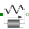

SpringDamperLinear 1D translational spring and damper in parallel |

|
Information
This information is part of the Modelica Standard Library maintained by the Modelica Association.
A spring and damper element connected in parallel. The component can be connected either between two sliding masses to describe the elasticity and damping, or between a sliding mass and the housing (model Fixed), to describe a coupling of the sliding mass with the housing via a spring/damper.
Parameters (6)
| stateSelect |
Value: StateSelect.prefer Type: StateSelect Description: Priority to use s_rel and v_rel as states |
|---|---|
| s_nominal |
Value: 1e-4 Type: Distance (m) Description: Nominal value of s_rel (used for scaling) |
| useHeatPort |
Value: false Type: Boolean Description: =true, if heatPort is enabled |
| c |
Value: Type: TranslationalSpringConstant (N/m) Description: Spring constant |
| d |
Value: Type: TranslationalDampingConstant (N·s/m) Description: Damping constant |
| s_rel0 |
Value: 0 Type: Position (m) Description: Unstretched spring length |
Connectors (3)
| flange_a |
Type: Flange_a Description: Left flange of compliant 1-dim. translational component |
|
|---|---|---|
| flange_b |
Type: Flange_b Description: Right flange of compliant 1-dim. translational component |
|
| heatPort |
Type: HeatPort_a Description: Optional port to which dissipated losses are transported in form of heat |
Used in Examples (6)
|
Modelica.Blocks.Examples.NoiseExamples Demonstrates how to model measurement noise in an actuator |
|
|
Modelica.Mechanics.Translational.Examples Setting of initial conditions |
|
|
Modelica.Mechanics.Translational.Examples Use of damper models |
|
|
Modelica.Mechanics.Translational.Examples Demonstrate usage of ElastoGap |
|
|
Modelica.Mechanics.Translational.Examples Demonstrate the modeling of heat losses |
|
|
Modelica.Thermal.FluidHeatFlow.Examples Two cylinder system |